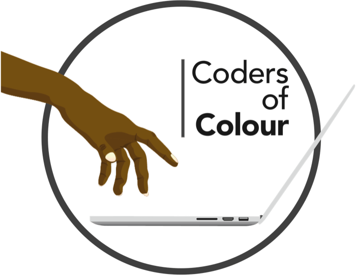
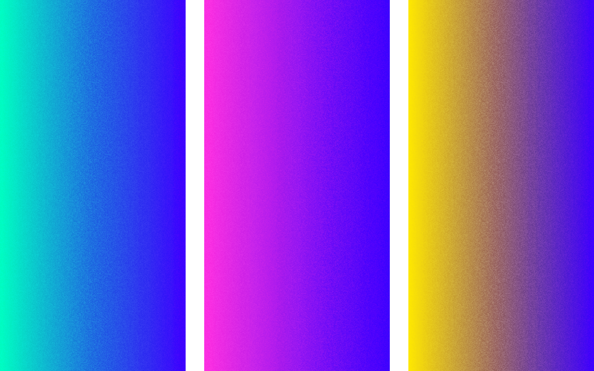
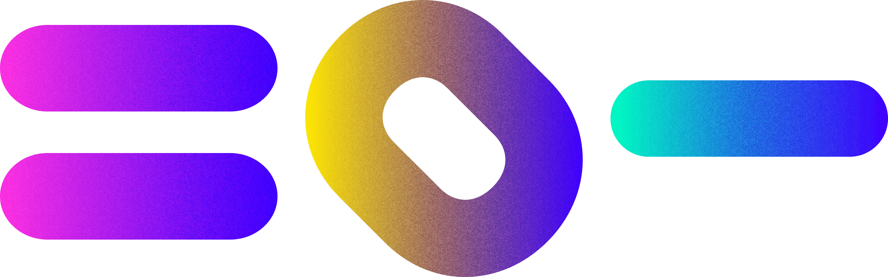
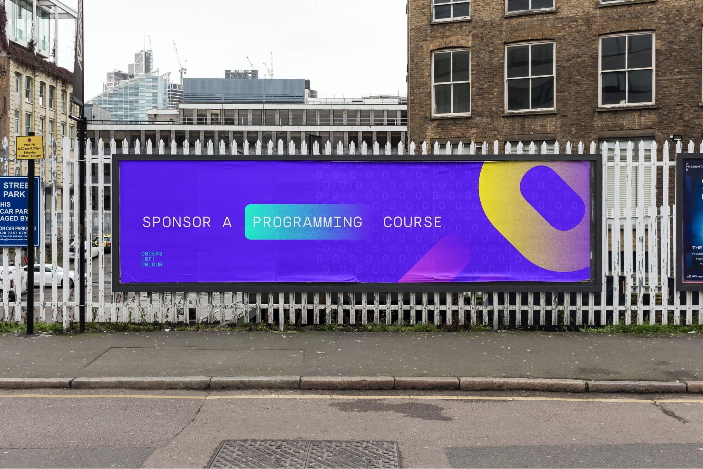

July 2020
We worked with Tolulope, founder of Coders of Colour to help establish a new brand identity they could use as they furthered their cause in empowering and enabling young underrepresented people of colour to pursue a career in tech.
We felt it imperative to bring forward a new, flexible and bright identity that could be used throughout the charities work. After a few Zoom calls and working entirely remotely we got to work designing up something I felt was a little more akin to where she wanted to take the brand.
New logo type & New condensed logo mark
As the brand name is rather long, we discussed having something designed that was smaller in stature that could be used where the full logo couldn’t (e.g. social media icons). The logo type itself is based on Python markup, (Tolulope’s favourite language) and diagonal lines between “O”s are there to almost mimic a 0.
In the logomark, the two C’s of the brand name are encassed in the O with the diagonal line forming the bond between the letter forms themselves.
Injecting colour, warmth and dynamism to the brand was something we felt fit Coders of Colour so well. We set a new colour palette, a bold blue for the core colour and three supporting gradients. The gradeints move from the core blue to pink, to yellow and to mint green.
Alongside the gradients we established some core design elements that could be used in an ongoing basis by Coders of Colour to inject the brand into any presentations, social media posts or any accompanying branded media.
